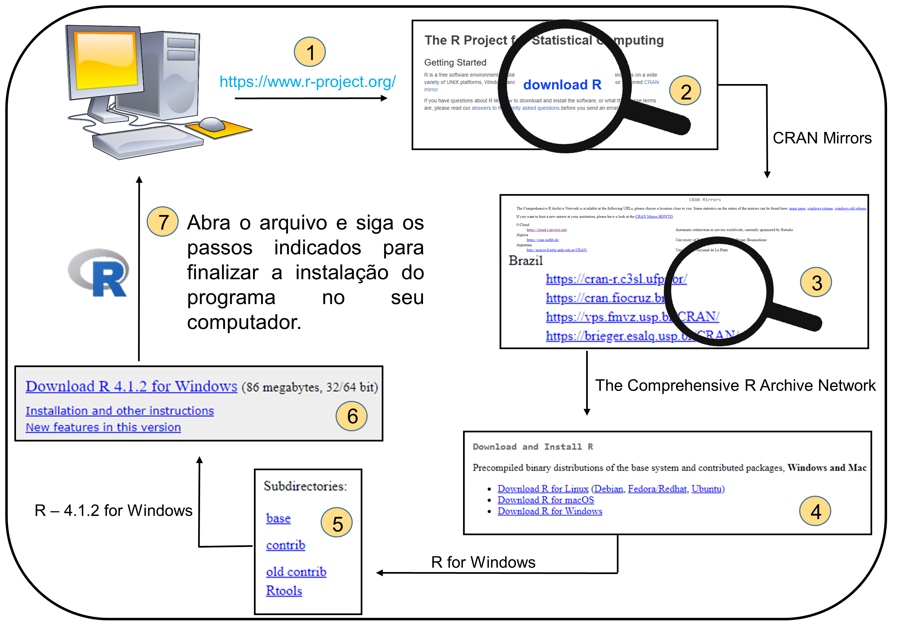
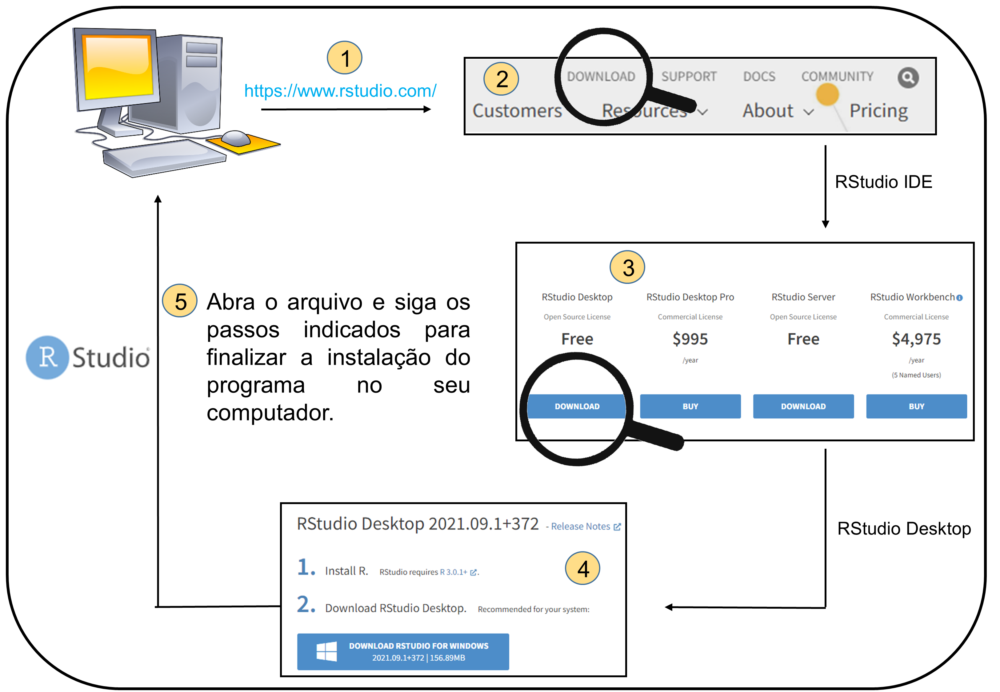

3 Pré-requisitos
3.1 Introdução
O objetivo deste capítulo é informar como fazer a instalação dos Programas R e RStudio, além de descrever os pacotes e dados necessários para reproduzir os exemplos do livro.
3.2 Instalação do R
Abaixo descrevemos os sete passos necessários para a instalação do programa R no seu computador (Figura 3.1):
- Para começarmos a trabalhar com o R é necessário baixá-lo na página do R Project. Então, acesse esse site http://www.r-project.org
- Clique no link download R
- Na página CRAN Mirros (Comprehensive R Archive Network), escolha uma das páginas espelho do Brasil mais próxima de você para baixar o programa
- Escolha agora o sistema operacional do seu computador (passos adicionais existem para diferentes distribuições Linux ou MacOS). Aqui faremos o exemplo com o Windows
- Clique em base para finalmente chegar à página de download com a versão mais recente do R
- Clique no arquivo Download R (versão mais recente) for Windows que será instalado no seu computador
- Abra o arquivo que foi baixado no seu computador e siga os passos indicados para finalizar a instalação do programa R

Figure 3.1: Esquema ilustrativo demonstrando os passos necessários para instalação do programa R no computador. Fonte das figuras: imagem computador e imagem da lupa.
📝 Importante
Para o Sistema Operacional (SO) Windows, alguns pacotes são dependentes da instalação separada do Rtools40. Da mesma forma, GNU/Linux e MacOS também possuem dependências de outras bibliotecas para pacotes específicos, mas que não abordaremos aqui. Essas informações de dependência geralmente são retornadas como erros e você pode procurar ajuda em fóruns específicos.
3.3 Instalação do RStudio
O RStudio possui algumas características que o tornam popular: várias janelas de visualização, marcação e preenchimento automático do script, integração com controle de versão, dentre outras funcionalidades.
Abaixo descrevemos os cinco passos necessários para a instalação do RStudio no seu computador (Figura 3.2):
- Para fazer o download do RStudio, acessamos o site https://www.rstudio.com/
- Clique em download
- Escolha a versão gratuita
- Escolha o instalador com base no seu sistema operacional
- Abra o arquivo que foi baixado no seu computador e siga os passos indicados para finalizar a instalação do programa RStudio

Figure 3.2: Esquema ilustrativo demonstrando os passos necessários para instalação do programa RStudio no computador. Fonte das figuras: imagem computador - https://pt.wikipedia.org/wiki/Computador_pessoal e imagem da lupa - https://openclipart.org/detail/185356/magnifier.
3.4 Versão do R
Todas os códigos, pacotes e análises disponibilizados no livro foram realizados no Programa R versão 4.1.2 (10-12-2021).
3.5 Pacotes
Descrevemos no Capítulo 4 o que são e como instalar os pacotes para realizar as análises estatísticas no R.
📝 Importante
Criamos o pacote ecodados que contém todas as informações e dados utilizados neste livro. Assim, recomendamos que você instale e carregue este pacote no início de cada capítulo para ter acesso aos dados necessários para executar as funções no R.
Para a instalação do pacote ecodados no macOS, você precisará ter instalado o programa XCode que pode ser baixado aqui. Este programa é disponibilizado gratuitamente pela Apple e é necessário para compilar quaisquer programas distribuídos em código fonte (ou seja, sem um binário). Após instalar esse programa e o pacote devtools, você poderá instalar o ecodados utilizando as instruções abaixo.
Abaixo, listamos todos os pacotes utilizados no livro. Você pode instalar os pacotes agora ou esperar para instalá-los quando ler o Capítulo 4 e entender o que são as funções install.packages(), library() e install_github(). Para fazer a instalação, você vai precisar estar conectado à internet.
install.packages(c("ade4", "adespatial", "ape", "bbmle", "betapart", "BiodiversityR", "car", "cati", "datasauRus", "devtools", "DHARMa", "dplyr", "ecolottery", "emmeans", "factoextra", "FactoMineR", "fasterize", "FD", "forcats", "geobr", "generalhoslem", "GGally", "ggExtra", "ggforce", "ggplot2", "ggpubr", "ggrepel", "ggspatial", "glmmTMB", "grid", "gridExtra", "here", "hillR", "iNEXT", "janitor", "kableExtra", "knitr", "labdsv", "lattice", "leaflet", "lmtest", "lsmeans", "lubridate", "mapview", "MASS", "MuMIn", "naniar", "nlme", "ordinal", "palmerpenguins", "performance", "pez", "phyloregion", "phytools", "picante", "piecewiseSEM", "purrr", "pvclust", "raster", "readr", "reshape2", "rgdal" , "Rmisc", "rnaturalearth", "RVAideMemoire", "sciplot", "sf", "sidrar", "sjPlot", "spData", "spdep", "stringr", "SYNCSA", "tibble", "tidyr", "tidyverse", "tmap", "tmaptools", "TPD", "vcd", "vegan", "viridis", "visdat", "mvabund", "rdist", "udunits2"), dependencies = TRUE)Diferente dos pacotes anteriores que são baixados do CRAN, alguns pacotes são baixados do GitHub dos pesquisadores responsáveis pelos pacotes. GitHub é um repositório remoto de códigos que permite controle de versão, muito utilizado por desenvolvedores e programadores. Nestes casos, precisamos carregar o pacote devtools para acessar a função install_github. Durante as instalações destes pacotes, algumas vezes o R irá pedir para você digitar um número indicando os pacotes que você deseja fazer update. Neste caso, digite 1 para indicar que ele deve atualizar os pacotes dependentes antes de instalar os pacotes requeridos.
library(devtools)
install_github("paternogbc/ecodados")
install_github("mwpennell/geiger-v2")
install_github("fawda123/ggord")
install_github("jinyizju/V.PhyloMaker")
install_github("ropensci/rnaturalearthhires")3.6 Dados
A maioria dos exemplos do livro utilizam dados reais extraídos de artigos científicos que já foram publicados ou dados que foram coletados por um dos autores deste livro. Todos os dados, publicados ou simulados, estão disponíveis no pacote ecodados. Além disso, em cada capítulo fazemos uma breve descrição dos dados para facilitar a compreensão sobre o que é variável resposta ou preditora, como essas variáveis estão relacionadas com as perguntas e predições do exemplo.